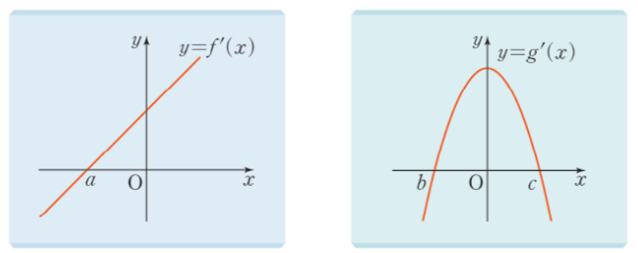

2026학년도 2학기 | 미적분 I
롤러코스터의 레일을 떠올려 보자. "높이가 높아지는 구간"과 "낮아지는 구간"이 번갈아 나타난다. 이를 좌표평면 위 함수의 증가·감소로 옮기면, 그 판정 도구가 무엇일까?
[개방형 발문] 함수 \(f(x) = x^3 - 3x^2 + 1\)의 그래프를 머릿속에 그려 보자. 어디서 증가하고 어디서 감소하는가? 그 판정에 도함수 \(f'(x)\)의 부호를 어떻게 사용할 수 있을지 추측해 보자.
[연결] 차시 13의 평균값 정리에 의하면 \(\dfrac{f(x_2) - f(x_1)}{x_2 - x_1} = f'(c)\). 양변의 부호가 같으므로 \(f'(c) \gt 0\)이면 함수의 값이 증가, \(f'(c) \lt 0\)이면 감소. 평균값 정리가 "증감 판정 정리"의 정당화 도구 그 자체임을 오늘 정착시킨다.
함수 \(f(x)\)가 어떤 구간에 속하는 임의의 두 실수 \(x_1, x_2\)에 대하여
핵심: 증가·감소는 "구간 단위"로 말한다. \(x = a\)라는 한 점 자체가 "증가"한다고 말하지 않는다. (비상 미적분 I P.78 · 증가·감소의 정의 참고)
함수 \(f(x) = x^2\)이 구간 \([0, \infty)\)에서 증가함을 보이자.
\(0 \leq x_1 \lt x_2\)인 임의의 두 실수에 대해
\( f(x_2) - f(x_1) = x_2^2 - x_1^2 = (x_2 - x_1)(x_2 + x_1) \) \( \gt 0 \)
이므로 \(f(x_1) \lt f(x_2)\). 따라서 \(f\)는 \([0, \infty)\)에서 증가한다. \(\blacksquare\)
한계: 함수가 복잡해지면 \(f(x_2) - f(x_1)\)의 부호를 인수분해로 보이기 어렵다. 일반적인 도구가 필요 \(\to\) 도함수의 부호. (비상 미적분 I P.79 · 예제 1 참고)
함수 \(f(x)\)가 어떤 열린구간 \((a, b)\)에서 미분가능할 때:
정당화: 평균값 정리에서 \(\dfrac{f(x_2) - f(x_1)}{x_2 - x_1} = f'(c)\) (\(c \in (x_1, x_2)\)). 분모 \(x_2 - x_1 \gt 0\)이므로 분자 \(f(x_2) - f(x_1)\)의 부호와 \(f'(c)\)의 부호가 일치.
⚠ 역은 일반적으로 거짓: \(f(x) = x^3\)은 \((-\infty, \infty)\)에서 증가하지만 \(f'(0) = 0\). 즉 "증가하면 \(f' \gt 0\)"은 항상 참은 아니다 — "\(f' \geq 0\)이고 등호가 고립된 점에서만 성립"까지 확장해야 정확. (비상 미적분 I P.79~80 · 증가·감소의 판정 + \(x^3\) 반례 참고)
3단계 루틴: ① \(f'(x)\) 구하기 ② \(f'(x) = 0\)의 해 찾기 ③ \(f'\)의 부호를 영역별로 조사하여 표 작성.
\(f'(x) = 3x^2 - 6x = 3x(x - 2)\). \(f'(x) = 0 \Rightarrow x = 0\) 또는 \(x = 2\).
| \(x\) | \(\cdots\) | \(0\) | \(\cdots\) | \(2\) | \(\cdots\) |
|---|---|---|---|---|---|
| \(f'(x)\) | \(+\) | \(0\) | \(-\) | \(0\) | \(+\) |
| \(f(x)\) | ↗ | \(1\) | ↘ | \(-3\) | ↗ |
따라서 \(f\)는 구간 \((-\infty, 0]\), \([2, \infty)\)에서 증가하고, 구간 \([0, 2]\)에서 감소한다.
핵심: 증감표는 단원 II-2 전체(증감·극값·그래프·방정식과 부등식)의 공통 작업판. 매번 정확히 작성하는 습관이 후속 차시 15~18 전체의 기반. (비상 미적분 I P.80 · 예제 2 참고)
증감표 직접 작성 — 도함수 부호 판정의 기본 루틴
매개변수 + "항상 증가" 조건 — \(f' \geq 0\)의 판별식 활용

"틀려야 는다!" 증가 \(\Leftrightarrow f' \gt 0\)인가? — 단조성과 도함수의 미묘한 관계
📢 학생: "열린구간 \((a, b)\)에서 함수 \(f(x)\)가 증가하면 이 구간에서 \(f'(x) \gt 0\)이야!"
대다수 학생이 "증가이면 \(f' \gt 0\)"을 직관적으로 참이라고 단정한다. 그러나 본 차시의 개념 구성 3에서 다룬 대로 "역은 일반적으로 거짓"이다. 결론: 학생의 말은 거짓.
STEP 1 — 반례 만들기: \(f(x) = x^3\)을 보자. 이 함수는 모든 실수 \(x\)에서 정의역 전체에서 증가한다 (정의에 의해 \(x_1 \lt x_2 \Rightarrow x_1^3 \lt x_2^3\)). 하지만 \(f'(x) = 3x^2\)이므로 \(f'(0) = 0\). 즉 증가하지만 \(f'(0) \gt 0\)이 아닌 점이 존재.
STEP 2 — 정확한 명제로 다듬기: 미분가능한 함수의 증가에 관한 정확한 명제는
① \(f'(x) \gt 0 \Rightarrow f\) 증가 (참)
② \(f\) 증가 \(\Rightarrow f'(x) \geq 0\) (참, 등호 허용)
③ \(f\) 증가 \(\Rightarrow f'(x) \gt 0\) (모든 \(x\)에서) (거짓)
②와 ③의 미묘한 차이가 핵심. 증가는 "\(f'(x) \geq 0\)이고 \(f'(x) = 0\)인 점이 고립된 점들"이라는 조건과 동치.
STEP 3 — 삼차함수 한정 분석: 최고차항의 계수가 양수인 삼차함수 \(f(x) = x^3 + bx^2 + cx + d\)가 실수 전체에서 증가하면 \(f'(x) = 3x^2 + 2bx + c \geq 0\) (모든 \(x\)) \(\Leftrightarrow\) 판별식 \(D = 4b^2 - 12c \leq 0\). 등호 \(f'(x_0) = 0\)이 어떤 \(x_0\)에서 성립하더라도 \(f\)는 여전히 증가 — 단 그 \(x_0\)는 고립된 점이어야 함. 결론: 학생의 말 "증가이면 모든 \(x\)에서 \(f' \gt 0\)"은 거짓이며, 정확한 명제는 "\(f'(x) \geq 0\)이고 등호가 고립된 점에서만 성립"이다.
핵심 통찰: "충분조건"과 "필요조건"의 구분이 핵심. \(f' \gt 0\)은 증가의 충분조건이지만 필요조건이 아니다. \(f' \geq 0\) (모든 \(x\), 등호 고립)이 증가의 정확한 동치 조건. 차시 14의 핵심 함정이며, 차시 15(극대·극소)에서 \(f'(a) = 0\)이 극값을 보장하지 않는 함정(예: \(f(x) = x^3\)에서 \(x = 0\))으로 직접 연결된다.
📖 출처: 수능특강 수학Ⅱ · 도함수의 활용 1 · 유제 5 [26009-0079]
난이도 ★★★ (학습지 max+2, 7분) · 핵심: 증가의 동치조건 \((x_1 - x_2)(f(x_1) - f(x_2)) \gt 0\) 해석 → 실수 전체에서 \(f' \geq 0\) → 이차식 판별식 \(\leq 0\)
\(x_1 \lt x_2\)인 모든 실수 \(x_1,\ x_2\)에 대하여 \((x_1 - x_2)(f(x_1) - f(x_2)) \gt 0\)이다.
핵심: \((x_1 - x_2)(f(x_1) - f(x_2)) \gt 0\)는 "증가함수"의 동치 표현. 다항함수의 실수 전체 증가 조건은 \(f'(x) \geq 0\)이며, 이차 \(f'\)이면 판별식 \(\leq 0\)으로 즉시 환원된다 — 차시 14의 핵심 응용 패턴.
📖 출처: 2003년 6월 모의평가 수학영역 가/나형 11번 [3점]
난이도 ★★★ (학습지 max+2, 7분) · 핵심: "극값을 갖지 않는다" \(\Leftrightarrow\) "도함수가 부호 변화 없이 모든 실수에서 \(\geq 0\)" \(\Leftrightarrow\) "이차식 도함수의 판별식 \(\leq 0\)" — 매개변수 \(a\)에 대한 부등식 풀이
핵심: "삼차함수가 극값을 갖지 않는다" \(\Leftrightarrow\) "도함수(이차함수)의 판별식 \(\leq 0\)"은 차시 14의 가장 표준적인 공식. 본 평가원 기출은 (i) 극값 조건의 도함수 해석, (ii) 이차식 판별식, (iii) 매개변수에 대한 부등식 풀이를 3단계로 통합한다. 학습지 14 Level 2~3의 핵심 사고법이 평가원 3점 기출에서 어떻게 출제되는지를 보여주는 대표 사례. 경계값 등호를 포함하는 것이 함정 포인트(도함수의 중근에서는 부호 변화가 없으므로 극값이 발생하지 않음).
스마트폰으로 우측 QR코드를 스캔하여, 아래 3가지 유형 중 하나 이상을 체크하고 통합 서술형으로 작성해 제출한다.